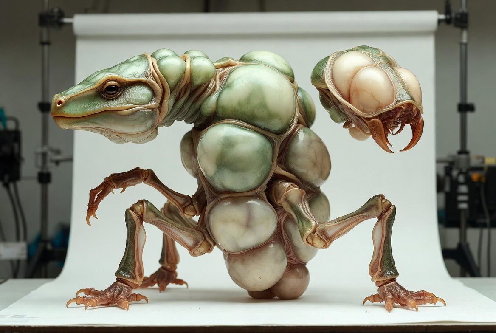
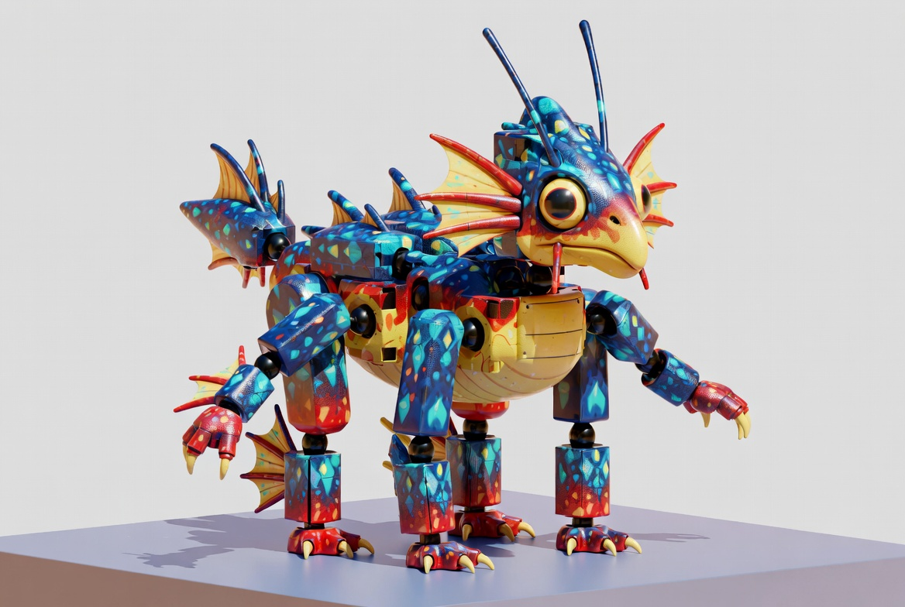
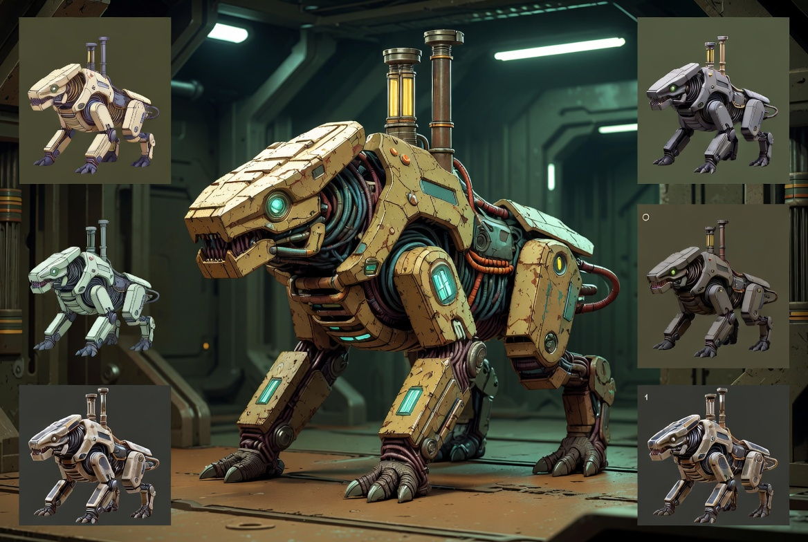

Live tracking of trending GitHub repos & Reddit threads. Monitoring nmagarino & wanghaisheng for new releases. Side-by-side feature comparisons + Godot integration tools.
Real-time data from GitHub REST API (unauthenticated • refreshes on demand)
AI-generated reference concepts matching the key projects (SDF metaball style, Spore modular, and your Godot post-apoc vision)



Robust creature system: up to 4 pairs of procedurally generated limbs (multi-joint, mirrored, appendages), 3 head types, 8-metaball spline spine. Excellent reference implementation.
Procedurally generate creatures in Unity inspired by Spore. Repository has undergone several major changes. Major update + YouTube devlog expected soon.
| Project | Limb Creation | Head Generation | Torso / Body | Godot Ready | Standout Strength |
|---|---|---|---|---|---|
| Pudgy-Pals (nmagarino) WebGL SDF |
Excellent — 4 pairs, multi-joint procedural placement, spherical randomization, mirroring, appendages | Good — 3 predefined scalable SDF types | 8 metaballs on spline (De Casteljau) | Concepts portable | Best open reference for coherent organic limb & head logic + real-time rendering |
| Creature-Creator (wanghaisheng) Unity |
Expected strong (Spore-style modular attachment & procedural parts) | Expected (customizable/procedural heads) | Body molding & part system | GLTF export | Major update incoming — editor-like workflow |
| creature (daniellochner) Unity |
Strong — attachable limbs + body editing | Strong — heads + painting | Full editor (build/paint/test) | GLTF | Most complete Spore recreation with full source |
| Infinigen (Princeton) Blender/Python |
Advanced — full procedural articulated animals | Advanced — fully procedural | Complete math-rule creature bodies | GLTF/FBX export | Photorealistic infinite variation, math-only (no AI) |
| Your Project Genesis Godot 4 C# • Sanctuary Site-04 |
In development — sprite-stacking + planned modular data-driven limbs | Planned — hybrid or procedural heads | Genetic engine (12-locus D/r/M) + nutrient pipelines | NATIVE | Your opportunity to build the definitive Godot-native procedural creature system |
Practical next steps to bring ideas from Pudgy-Pals, Spore-style tools, and Infinigen into your Sanctuary Site-04 creature systems
Uses public REST API. Rate limit ~60 req/hr. The Live section above already implements search + repo polling. For higher limits, add a PAT.
Follow r/proceduralgeneration & r/godot. Use IFTTT/Zapier or Reddit's own alerts for keywords like "procedural creature generator".
Run the Python template below on a schedule (cron / GitHub Actions) to push new releases to Discord or update a JSON feed.
import os, schedule, time
from github import Github
from datetime import datetime, timedelta
g = Github(os.getenv("GITHUB_TOKEN")) # recommended
def check_creature_repos():
query = '("procedural creature" OR "creature generator" OR "procedural generation" creature) created:>2026-05-01'
for repo in g.search_repositories(query=query, sort="updated")[:8]:
print(f"[{repo.updated_at}] {repo.full_name} — {repo.description}")
def check_monitored():
for dev in ["nmagarino", "wanghaisheng"]:
for repo in g.get_user(dev).get_repos():
if any(k in repo.name.lower() for k in ["creature", "procedural"]):
print(f"Activity: {repo.full_name} updated {repo.updated_at}")
schedule.every(4).hours.do(check_creature_repos)
schedule.every(8).hours.do(check_monitored)
print("ProcGen Creature Monitor started")
while True:
schedule.run_pending()
time.sleep(300)pip install PyGithub schedule. Add Discord webhook or push to JSON for this dashboard to consume.